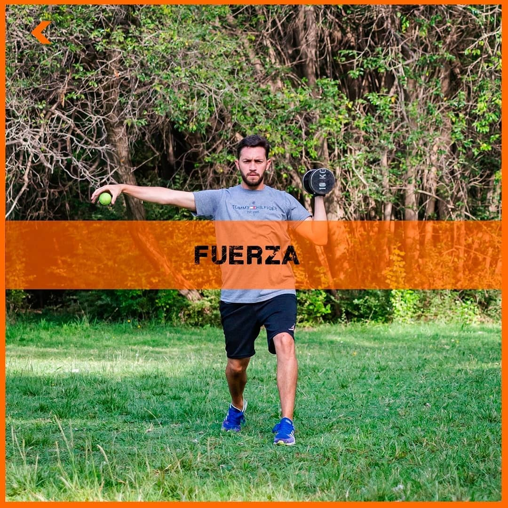
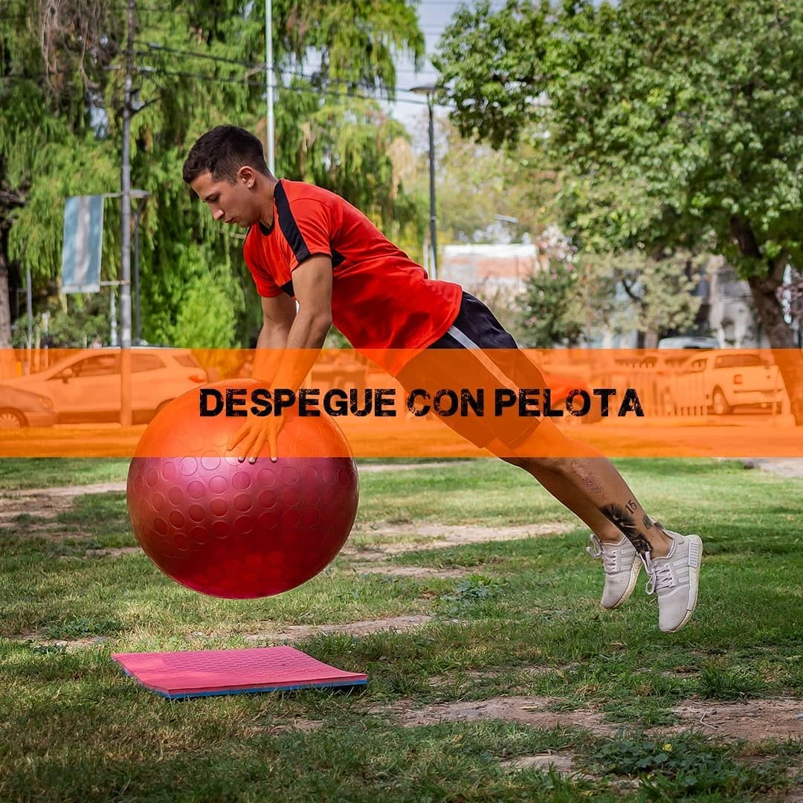
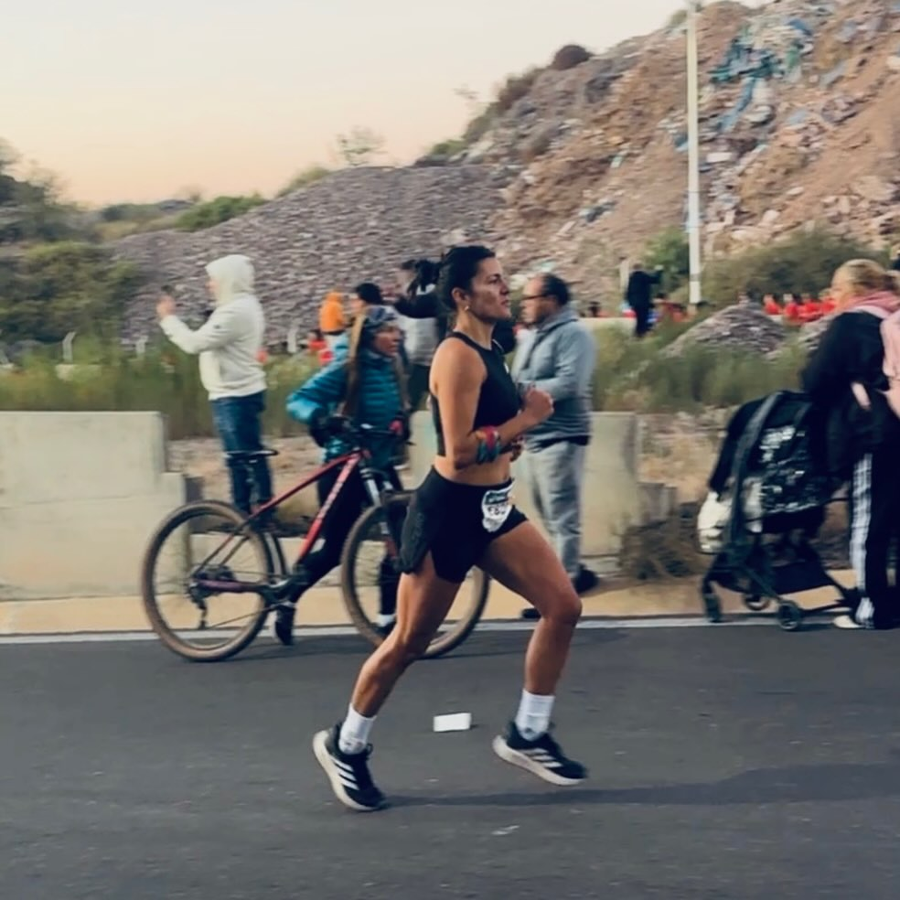

Teoría aplicada
Conceptos clave para entender qué entrenar, por qué hacerlo y cómo transferirlo al rendimiento.
Master Class presencial
Aprendé a transformar ejercicios simples en herramientas de alto rendimiento para correr mejor en montaña.
Menos ejercicios, más resultados
Una experiencia pensada para corredores, entrenadores y profesionales que quieren llevar el entrenamiento de fuerza a otro nivel: teoría clara, práctica real y variantes específicas para el trail running.
Qué incluye
Conceptos clave para entender qué entrenar, por qué hacerlo y cómo transferirlo al rendimiento.
Ejercicios básicos, progresiones y variantes para adaptar la carga a cada corredor.
Demandas de subidas, bajadas, estabilidad, potencia, técnica y fatiga en montaña.
Más fuerza, mejor rendimiento y una preparación física con sentido deportivo.
Metodología propia

Base sólida para sostener ritmos, desnivel y volumen de entrenamiento.

Ejercicios con transferencia real al gesto deportivo del corredor.

Movimiento más eficiente para correr mejor y gastar menos energía.

Despegues, cambios de ritmo y trabajo explosivo para montaña.

Estabilidad, equilibrio y control para terrenos técnicos.

Aplicación directa al corredor y a las exigencias de carrera.

Entrenador
Preparador físico de trail 🏔️ Profesor de Educación Física IEF Mendoza 👨🎓
Desarrolla una metodología propia en fuerza y rendimiento, orientada a corredores que buscan entrenar con más criterio, especificidad y transferencia al terreno real.
Cupos limitados
Completá el formulario o escribí por WhatsApp para consultar disponibilidad.